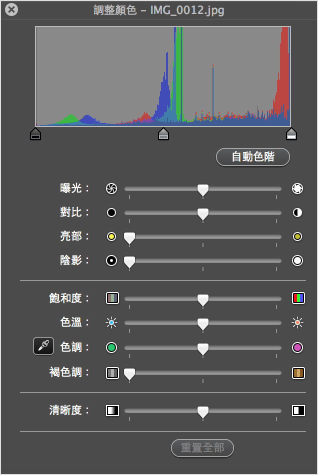
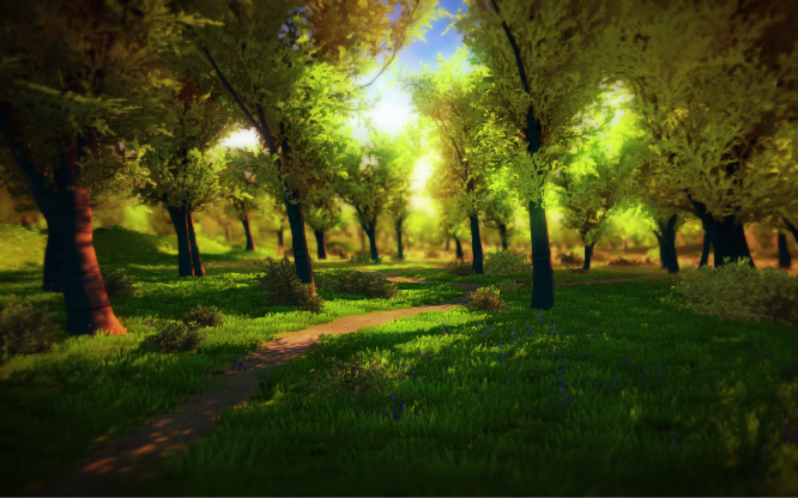
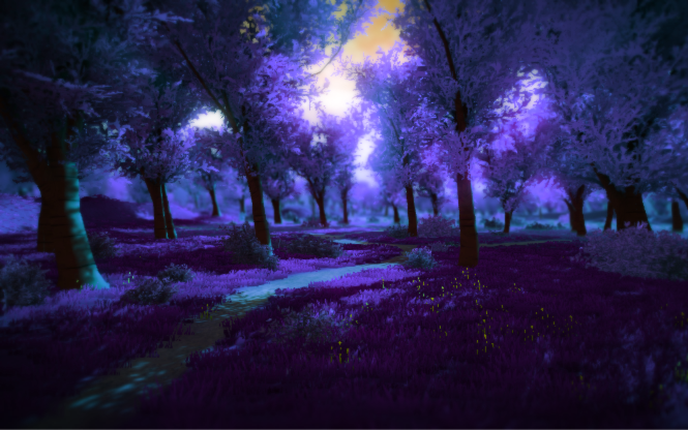
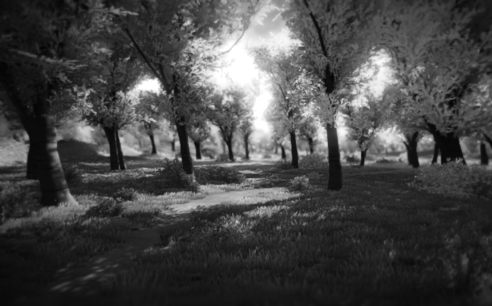
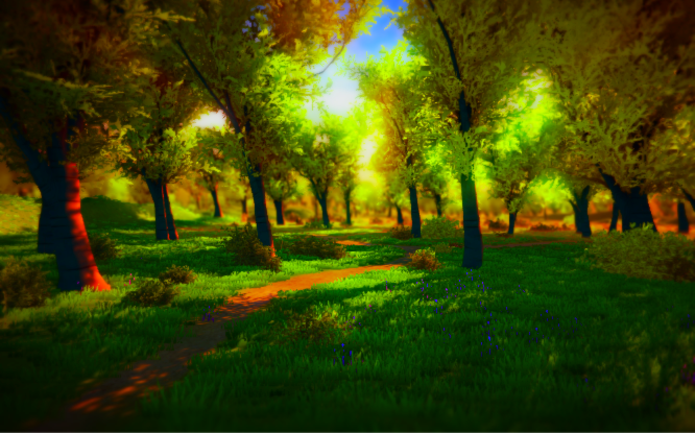
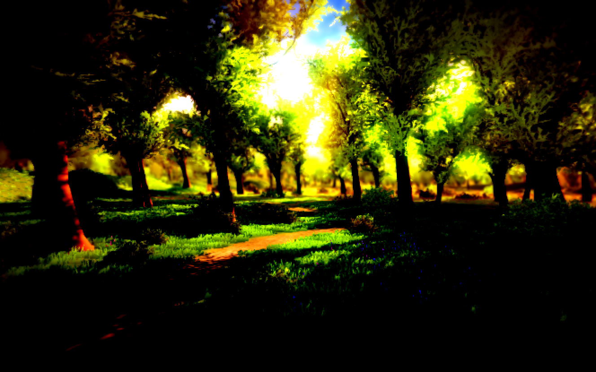

在各種影像處理軟體中
常常會處理影像的各種數值
例如：曝光、對比、飽和度、色相…等等

在這篇教學中
撰寫了一個用來調整這些參數的 Shader
並且運用在 Image Effect 上
使整個場景都能受到這個 Shader 影響
HSBC Effect.shader
Shader "Unlit/HSBC Effect"
{
Properties
{
_MainTex ("Texture", 2D) = "white" {}
_Hue ("Hue", Range(0, 1.0)) = 0
_Saturation ("Saturation", Range(0, 1.0)) = 0.5
_Brightness ("Brightness", Range(0, 1.0)) = 0.5
_Contrast ("Contrast", Range(0, 1.0)) = 0.5
}
SubShader
{
Pass
{
CGPROGRAM
#pragma vertex vert
#pragma fragment frag
#include "UnityCG.cginc"
inline float3 applyHue(float3 aColor, float aHue)
{
float angle = radians(aHue);
float3 k = float3(0.57735, 0.57735, 0.57735);
float cosAngle = cos(angle);
return aColor * cosAngle + cross(k, aColor) * sin(angle) + k * dot(k, aColor) * (1 - cosAngle);
}
inline float4 applyHSBCEffect(float4 startColor, fixed4 hsbc)
{
float hue = 360 * hsbc.r;
float saturation = hsbc.g * 2;
float brightness = hsbc.b * 2 - 1;
float contrast = hsbc.a * 2;
float4 outputColor = startColor;
outputColor.rgb = applyHue(outputColor.rgb, hue);
outputColor.rgb = (outputColor.rgb - 0.5f) * contrast + 0.5f;
outputColor.rgb = outputColor.rgb + brightness;
float3 intensity = dot(outputColor.rgb, float3(0.39, 0.59, 0.11));
outputColor.rgb = lerp(intensity, outputColor.rgb, saturation);
return outputColor;
}
struct appdata
{
float4 vertex : POSITION;
float2 uv : TEXCOORD0;
fixed4 color : COLOR;
};
struct v2f
{
float4 vertex : SV_POSITION;
float2 uv : TEXCOORD0;
fixed4 hsbc : COLOR;
};
sampler2D _MainTex;
float4 _MainTex_ST;
fixed _Hue, _Saturation, _Brightness, _Contrast;
v2f vert (appdata v)
{
v2f o;
o.vertex = mul(UNITY_MATRIX_MVP, v.vertex);
o.uv = TRANSFORM_TEX(v.uv, _MainTex);
o.hsbc = fixed4(_Hue, _Saturation, _Brightness, _Contrast);
return o;
}
fixed4 frag (v2f i) : COLOR
{
fixed4 startColor = tex2D(_MainTex, i.uv);
float4 hsbcColor = applyHSBCEffect(startColor, i.hsbc);
return hsbcColor;
}
ENDCG
}
}
}這個 Shader 中包含四個可調參數
Hue：色相
Saturation：飽和度
Brightness：亮度
Contrast：對比
這時候已經可以利用 Material 來對單一物件進行調整
但我們這篇多利用了 Post Effect 來對整個畫面做調整
HSBCImageEffect.cs
using UnityEngine;
using System.Collections;
[ExecuteInEditMode]
public class HSBCImageEffect : MonoBehaviour
{
[Range(0, 1.0f)]
public float hue = 0;
[Range(0, 1.0f)]
public float saturation = 0.5f;
[Range(0, 1.0f)]
public float brightness = 0.5f;
[Range(0, 1.0f)]
public float constract = 0.5f;
private string m_huePropertyName = "_Hue";
private string m_saturationPropertyName = "_Saturation";
private string m_brightnessPropertyName = "_Brightness";
private string m_constractPropertyName = "_Contrast";
private int m_hueID;
private int m_saturationID;
private int m_brightnessID;
private int m_constractID;
private Material m_material;
void Awake ()
{
InitPropertyIDs();
}
private void InitPropertyIDs()
{
if(m_material == null)
m_material = new Material( Shader.Find("Unlit/HSBC Effect") );
m_hueID = Shader.PropertyToID(m_huePropertyName);
m_saturationID = Shader.PropertyToID(m_saturationPropertyName);
m_brightnessID = Shader.PropertyToID(m_brightnessPropertyName);
m_constractID = Shader.PropertyToID(m_constractPropertyName);
}
private void OnValidate()
{
if(m_material == null)
m_material = new Material( Shader.Find("Unlit/HSBC Effect") );
m_material.SetFloat(m_hueID, hue);
m_material.SetFloat(m_saturationID, saturation);
m_material.SetFloat(m_brightnessID, brightness);
m_material.SetFloat(m_constractID, constract);
}
void OnRenderImage (RenderTexture source, RenderTexture destination)
{
Graphics.Blit (source, destination, m_material);
}
}ExecuteInEditMode
MonoBehaviour.OnValidate
MonoBehaviour.OnRenderImage
將 HSBCImageEffect.cs 附加到 Camera 上
即可看到修改成果
H = 0, S = 0.5, B = 0.5, C = 0.5

H = 0.5, S = 0.5, B = 0.5, C = 0.5

H = 0, S = 0, B = 0.5, C = 0.5

H = 0, S = 1, B = 0.5, C = 0.5

H = 0, S = 0.5, B = 0.5, C = 1

參考來源：
Hue, saturation, brightness, contrast shader
使用資源：
Nature Starter Kit 2